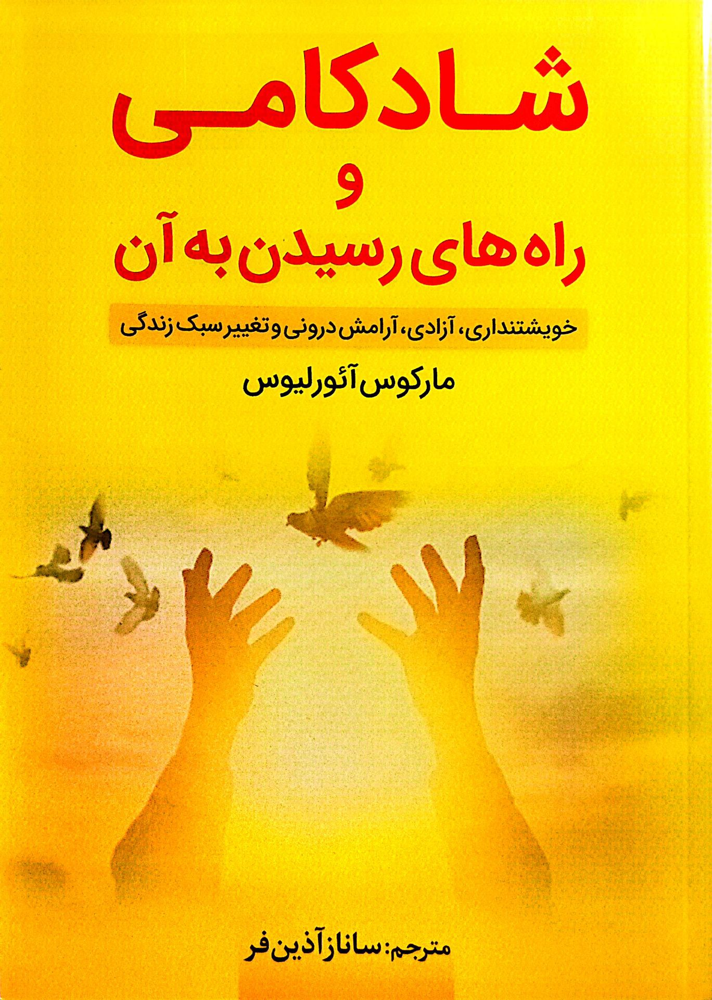
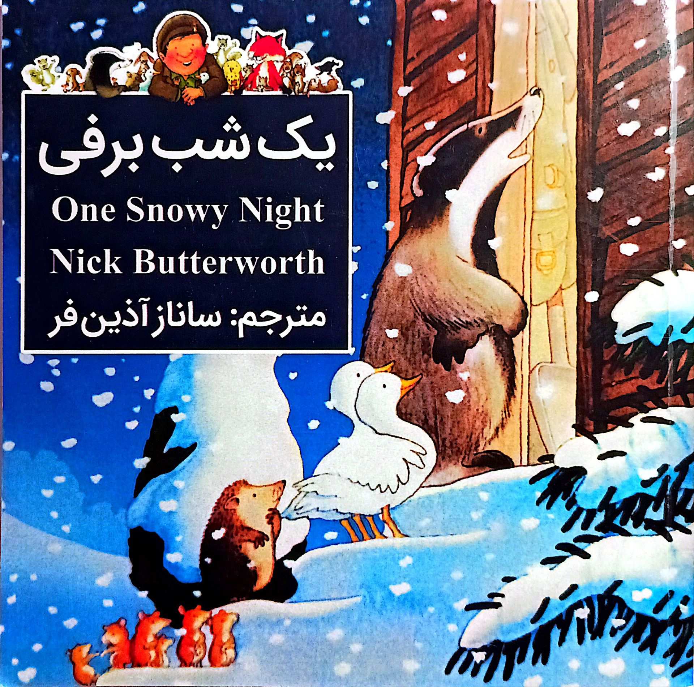
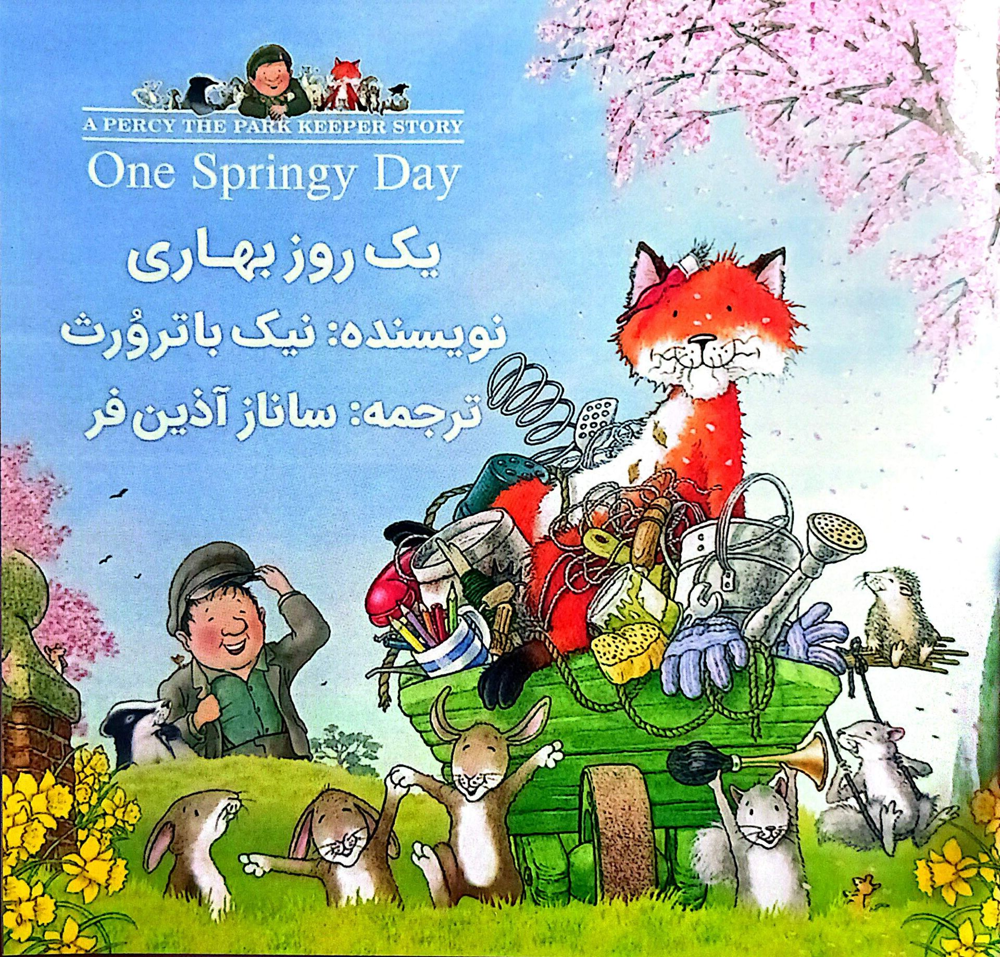
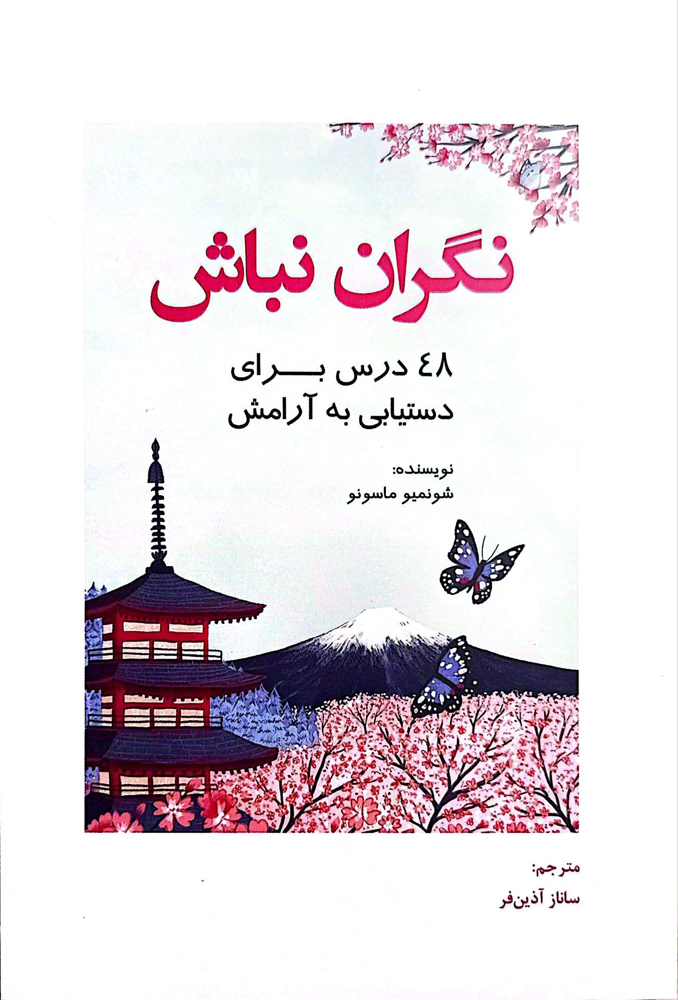

ساناز آذینفر
مترجم و نویسنده
«ترجمه، ادبیات ملی را جهانی میکند.»
مترجم و نویسنده
«ترجمه، ادبیات ملی را جهانی میکند.»
ساناز آذینفر مترجمی پرشور و دقیق با پنج کتاب منتشرشده است. آثار او پلی میان فرهنگهاست و خوانندگان فارسیزبان را با ادبیات جهان از طریق ترجمههایی روان و وفادار پیوند میدهد.

اثر دکتر اروین بریچر و مایک جرارد
مترجم: ساناز آذینفر
سال انتشار: ۱۳۹۴
📌 شابک: 978-600-344-220-7

اثر مارکوس آئورلیوس
مترجم: ساناز آذینفر
سال انتشار: ۱۳۹۹
📌 شابک: 978-600-344-658-8

اثر نیک باترورث
مترجم: ساناز آذینفر
سال انتشار: ۱۳۹۹
📌 شابک: 978-600-344-695-3

اثر نیک باترورث
مترجم: ساناز آذینفر
سال انتشار: ۱۴۰۰
📌 شابک: 978-622-942-599-2

اثر شونمیو ماسونو
مترجم: ساناز آذینفر
سال انتشار: ۱۴۰۲
📌 شابک: 978-622-320-157-8
اثر استیو لاریتسون
مترجم: امیرعلی توجه
ویراستار: ساناز آذینفر
سال انتشار: ۱۳۹۶
گفتوگوی ساناز آذینفر با خبرگزاری ایسنا درباره ادبیات کودک، ترجمه و اهمیت انتخاب کتابهای مناسب برای کودکان.
مشاهده مصاحبه در ایسنابرای ارتباط و همکاری میتوانید از طریق ایمیل زیر در تماس باشید:
ارسال ایمیل